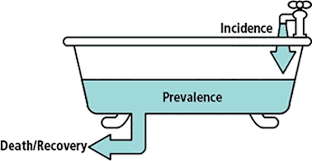
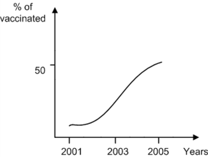
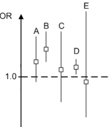
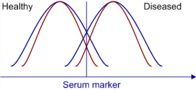
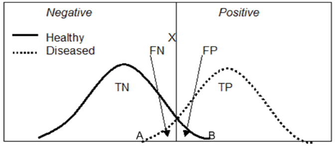

Q1: The incidence of diabetes mellitus in a population with very little migration has remained stable over the past 40 years (55 cases per 1000 people per year). At the same time, prevalence of the disease increased threefold over the same period. Which of the following is the best explanation for the changes in diabetes occurrence measures in the population?

Q2: In a survey of 10,000 IV drug abusers in town A, 1,000 turn out to be infected with hepatitis C and 500 infected with hepatitis B. During two years of follow-up, 200 patients with hepatitis C infection and 100 patients with hepatitis B infection die. Also during follow-up, 200 IV drug abusers acquire hepatitis C and 50 acquire hepatitis B. Which of the following is the best estimate of the annual incidence of hepatitis C infection in IV drug abusers in town A?
Q3: The following graph represents the vaccination rate dynamics for hepatitis B in IV drug abusers in town A. Which of the following hepatitis D statistics is most likely to be affected by the reported data?

Q4: In a city having a population of 1,000,000 there are 300,000 women of childbearing age. The following statistics are reported for the city in the year 2000: Fetal deaths: 200 Live births: 5,000 Maternal deaths: 70 Which of the following is the best estimate of the maternal mortality rate in the city in the year 2000?
Some specific measure of disease occurrence
Crude mortality rate: Calculated by dividing the number of deaths by the total population size.
Cause-specific mortality rate: Calculated by dividing the number of deaths from a particular disease by the total population size.
Case-fatality rate: Calculated by dividing the number of deaths from a specific disease by the number of people affected by the disease.
Standardized mortality ratio (SMR): Calculated by dividing the observed number of deaths by the expected number of deaths. This measure is used sometimes in occupational epidemiology. SMR of 2.0 indicates that the observed mortality in a particular group is twice as high as that in the general population.
Attack rate: An incidence measure typically used in infectious disease epidemiology. It is calculated by dividing the number of patients with disease by the total population at risk. For example, attack rate can be calculated for gastroenteritis among people who ate contaminated food.
Maternal mortality rate: Calculated by dividing the number of maternal deaths by the number of live births.
Crude birth rate: Defined as the number of live births divided by the total population size.
Q5: A study is conducted to assess the relationship between plasma homocysteine level and folic acid intake. The investigators demonstrate that the plasma homocysteine level is inversely related to folic acid intake, and the correlation coefficient is -0.8 (p < 0.01). According to the information provided, how much of the variability in plasma homocysteine levels is explained by folic acid intake?
The coefficient of determination can be calculated by squaring the correlation coefficient. The coefficient of determination expresses the percentage of the variability in the outcome factor that is explained by the predictor factor. In this question, the correlation coefficient is (-0.8); therefore, (-0.8)*(-0.8) = 0.64 (64%) Of variability in plasma homocysteine level is explained by folic acid intake.
Q6: Officials at a large community hospital report an increased incidence of acute lymphocytic leukemia (ALL) among children aged 5-12. They point out that some households in the community are exposed to chemical waste from a nearby factory. They believe that chemical waste causes leukemia. If a study is designed to evaluate the hospital officials' claim, which of the following subjects are most likely to comprise the control group?
Q7: Four separate studies are undertaken to assess the risk of acute coronary syndrome in post-menopausal women taking hormone replacement therapy. The results of the individual studies as well as the result of a meta-analysis are shown in the figure. Each study result is presented as an odds ratio along with a confidence interval. Which of the following results most likely corresponds to the meta-analysis?

Q8: A new test has been developed for early diagnosis of pancreatic cancer. It uses a serum marker level as an indicator of the neoplastic process. The graph demonstrates the distribution of serum marker levels in both healthy and diseased populations. Compared to the blue curves, the red curves are associated with:


Q9: A rapid test that is used to diagnose HSV infection is positive in HSV-infected patients 9 times more often than in non-infected patients. Which of the following expressions is used to derive this information?
Q10: A new serum marker shows promise in the early diagnosis of colon cancer. It represents a fetal antigen that has minimal expression in healthy adults, but has increased expression in those with colon cancer. Various serum concentration levels (P1, P2, and P3) are tested as cutoff points for diagnosis of disease. The sensitivity and specificity of the test at each of these serum concentrations is then compared to the gold standard (excisional biopsy). The following curve is constructed. Which of the following is the best statement concerning this new test?